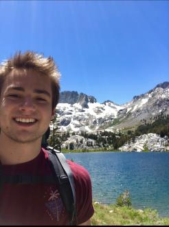
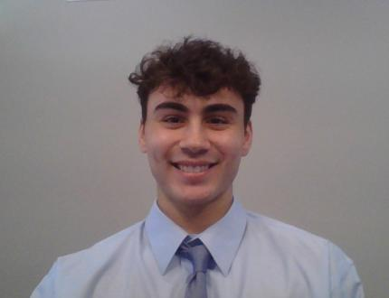
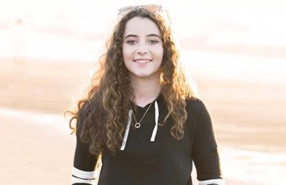

Back-End Development
Dane Jensen (Computer Science)
My name is Dane Jensen, I am a sophomore at ASU studying Computer Science. I have a focus in cybersecurity and currently do Java/C++ programming, MIPS assembly, MATLAB, and a little bit of web development.

Back-End Development
Anthony Caraballo (Computer Science)
My name is Anthony Caraballo, I am a sophomore at ASU studying Computer Science. I have a concentration in cybersecurity and am currently profficient in Java/Javascript, C/C++,python, and a little bit of web development.

Front-End Development
Morgan Cividanes (Informatics)
My name is Morgan Cividanes, I am a junior at ASU studying Informatics with a focus in Computer Gaming. My strengths are game development (Unity or GameMaker Studio), web development (HTML, CSS, JavaScript, SQL), and profieciency in Java, C# and C++.